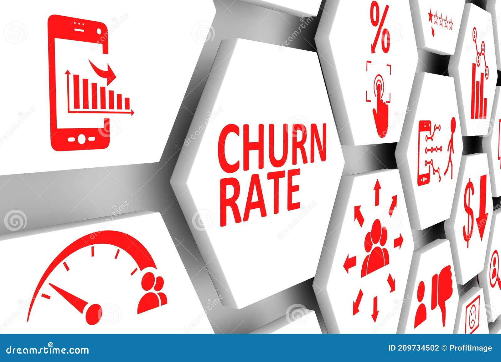

This is an Exploratory Data Analysis on Fuel Consumption dataset, which predicts the Co2 emissions from the historical data given, using the variables available.

This project is about using a Machine Learning Technique (Logistic Regression) on Python to predict customer churn in a telecommunications company.
This project is about a subscriber getting recommendations about movies he might like on a company's online streaming service based on the his streaming history and rating.
The Recommendation System used is built around the ideology of the Market Basket Analysis of Unsupervised Learning Techniques in Machine Learning.